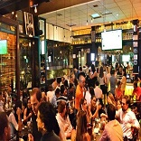

Passear na Avenida Paulista
Um dos principais centros financeiros da cidade, a avenida paulista também possui diversas opções de entretenimento. Endereço do Museu de Arte de São Paulo, MASP, do Teatro Gazeta e muitos outros, a região é de fácil acesso graças as diversas linhas de ônibus que cruzam a avenida e a linhade metrô que passa por baixo dela.
A Avenida Paulista sempre é assunto. O que será que estão falando a respeito no Twitter
Os bares da Villa Madalena

Depois de um dia de trabalho, nada melhor do que um bom chopp, um petisco e uma convera em uma mesa de bar. Opções de sobra na região das ruas Aspicuelta, Fradique Coutinho e Wisard.
Veja quais os melhores bares e restaurantes da regiãono Guia da VEJA São Paulo
O Parque do Ibirapuera
Um dos cartões postais da cidade, o parque dispõe de mais de 1,5km² de área verde, lagos artificiais e pistas de cooper e ciclismo. E se isso não fosse o suficiente, o parque costuma ser palco de diversos eventos culturais ao longo do ano.
Veja no mapa como chegar ao parque.